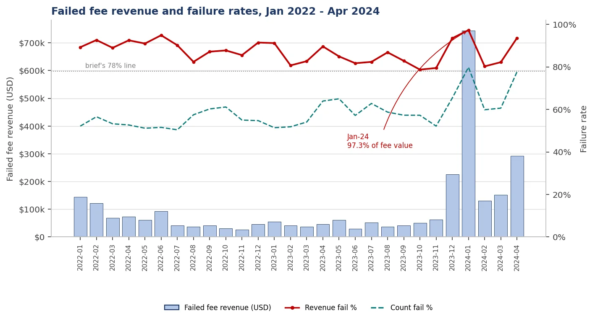
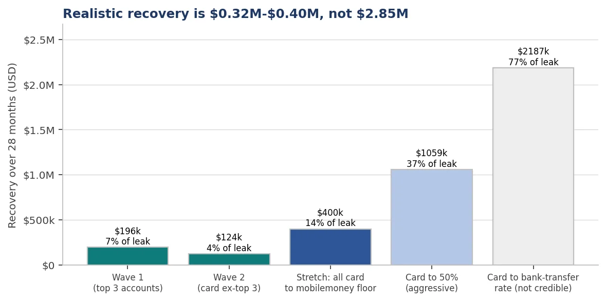

THE COST OF FAILED TRANSACTIONS
Finding the concentrated card and account leak inside $2.84M of failed fee revenue.
Python · pandas · openpyxl · matplotlib · Excel




6 SCREENSHOTS, SCROLL TO SEE MORE →
def kpis(d: pd.DataFrame) -> dict: att = float(d[class="tok-str">"total_count"].sum()) fatt = float(d[class="tok-str">"FailedCount"].sum()) rev = float(d[class="tok-str">"Rev_USD"].sum()) frev = float(d[class="tok-str">"FailedRev_USD"].sum()) succ_att = att - fatt return { class="tok-str">"attempts": att, class="tok-str">"failed_attempts": fatt, class="tok-str">"count_fail_rate": fatt / att if att else np.nan, class="tok-str">"revenue_usd": rev, class="tok-str">"failed_revenue_usd": frev, class="tok-str">"revenue_fail_rate": frev / rev if rev else np.nan, class="tok-str">"avg_fee_failed_att": frev / fatt if fatt else np.nan, class="tok-str">"avg_fee_success_att": (rev - frev) / succ_att if succ_att else np.nan, }
Go deeper
Business insights
The question, the evidence and what I would do about it, in plain language.
Technical documentation
The data model, formulas and measures, cleaning steps, and why I chose each visual.
THE PROBLEM
A finance challenge brief mixed two failure rates and asked where payment failures concentrated, why January 2024 spiked, and what a realistic fix could recover. The supplied extract holds 62,684 monthly aggregate rows across five East African markets.
APPROACH
I built a deterministic Python pipeline: prepare the raw CSVs once, analyse them into monthly, channel, country, sector, account, ticket and recovery tables, then generate a 15-sheet Excel workbook, six report charts and a 64-check QA suite. Both failure lenses stay separate throughout.
OUTCOME
10 accounts hold 49.3 percent of the $2,842,676 failed fee revenue. Card holds 79.7 percent of the leak and fails 93.8 percent by fee value. January 2024 was a volume and mix shock from a few accounts. A credible fix recovers $319,853 stacked, or $399,575 in the stretch case, not the full $2.84M.